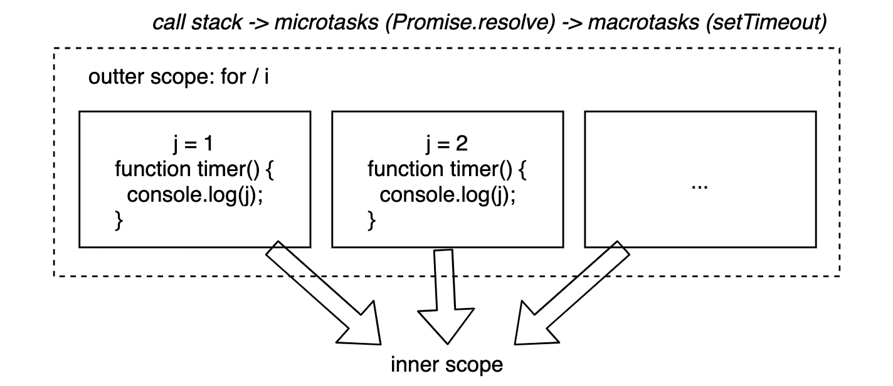

<!DOCTYPE html><html lang="en-us"><head><meta charset="UTF-8"><meta http-equiv="X-UA-Compatible" content="IE=edge,chrome=1"><title>《你不知道的 JavaScript》读书笔记（上） | 曜彤.手记</title><meta name="description" content="旧书清理系列。"><meta name="generator" content="曜彤.手记"><meta name="author" content="于航(曜彤)"><meta name="keywords" content="博客, C++, C, VB, Web, Java, IT, 编程, 开发, Android, Python, MySQL, 科技, 黑客, 技术, Javascript, 云, 大数据, 计算, 机器学习, AI, 人工智能, 创业, 产品, 公司, WebAssembly, Wasm"><meta name="HandheldFriendly" content="True"><meta name="MobileOptimized" content="320"><meta name="viewport" content="width=device-width,initial-scale=1.0,maximum-scale=1,user-scalable=0"><link rel="stylesheet" type="text/css" href="/styles/screen.css"><link rel="apple-touch-icon" sizes="57x57" href="/images/apple-touch-icon-57x57.jpg"><link rel="apple-touch-icon" sizes="60x60" href="/images/apple-touch-icon-60x60.jpg"><link rel="apple-touch-icon" sizes="72x72" href="/images/apple-touch-icon-72x72.jpg"><link rel="apple-touch-icon" sizes="76x76" href="/images/apple-touch-icon-76x76.jpg"><link rel="apple-touch-icon" sizes="114x114" href="/images/apple-touch-icon-114x114.jpg"><link rel="apple-touch-icon" sizes="120x120" href="/images/apple-touch-icon-120x120.jpg"><link rel="apple-touch-icon" sizes="144x144" href="/images/apple-touch-icon-144x144.jpg"><link rel="apple-touch-icon" sizes="152x152" href="/images/apple-touch-icon-152x152.jpg"><link rel="apple-touch-icon" sizes="196x196" href="/images/apple-touch-icon-196x196.jpg"><link rel="apple-touch-icon" sizes="310x310" href="/images/apple-touch-icon-310x310.jpg"><link href="/images/splash/iphone5_splash.png" media="(device-width: 320px) and (device-height: 568px) and (-webkit-device-pixel-ratio: 2)" rel="apple-touch-startup-image"><link href="/images/splash/iphone6_splash.png" media="(device-width: 375px) and (device-height: 667px) and (-webkit-device-pixel-ratio: 2)" rel="apple-touch-startup-image"><link href="/images/splash/iphoneplus_splash.png" media="(device-width: 621px) and (device-height: 1104px) and (-webkit-device-pixel-ratio: 3)" rel="apple-touch-startup-image"><link href="/images/splash/iphonex_splash.png" media="(device-width: 375px) and (device-height: 812px) and (-webkit-device-pixel-ratio: 3)" rel="apple-touch-startup-image"><link href="/images/splash/iphonexr_splash.png" media="(device-width: 414px) and (device-height: 896px) and (-webkit-device-pixel-ratio: 2)" rel="apple-touch-startup-image"><link href="/images/splash/iphonexsmax_splash.png" media="(device-width: 414px) and (device-height: 896px) and (-webkit-device-pixel-ratio: 3)" rel="apple-touch-startup-image"><link href="/images/splash/ipad_splash.png" media="(device-width: 768px) and (device-height: 1024px) and (-webkit-device-pixel-ratio: 2)" rel="apple-touch-startup-image"><link href="/images/splash/ipadpro1_splash.png" media="(device-width: 834px) and (device-height: 1112px) and (-webkit-device-pixel-ratio: 2)" rel="apple-touch-startup-image"><link href="/images/splash/ipadpro3_splash.png" media="(device-width: 834px) and (device-height: 1194px) and (-webkit-device-pixel-ratio: 2)" rel="apple-touch-startup-image"><link href="/images/splash/ipadpro2_splash.png" media="(device-width: 1024px) and (device-height: 1366px) and (-webkit-device-pixel-ratio: 2)" rel="apple-touch-startup-image"><link rel="icon" type="image/png" sizes="16x16" href="/images/favicon-16x16.png"><link rel="icon" type="image/png" sizes="32x32" href="/images/favicon-32x32.png"><link rel="icon" type="image/png" sizes="96x96" href="/images/favicon-96x96.png"><link rel="icon" type="image/png" sizes="128x128" href="/images/favicon-128.png"><link rel="icon" type="image/png" sizes="196x196" href="/images/favicon-196x196.png"><meta name="msapplication-TileColor" content="#FFFFFF"><meta name="msapplication-TileImage" content="mstile-144x144.png"><meta name="msapplication-square70x70logo" content="mstile-70x70.png"><meta name="msapplication-square150x150logo" content="mstile-150x150.png"><meta name="msapplication-wide310x150logo" content="mstile-310x150.png"><meta name="msapplication-square310x310logo" content="mstile-310x310.png"><meta name="msapplication-square310x310logo" content="mstile-310x310.png"><link rel="manifest" href="/manifest.webmanifest"><link rel="alternate" type="application/atom+xml" title="Atom 0.3" href="/atom.xml"><link rel="stylesheet" href="/css/prism-okaidia.css" type="text/css">
<link rel="stylesheet" href="/css/prism-line-numbers.css" type="text/css"></head><body itemscope itemtype="https://schema.org/WebPage"><div class="canvas-containter"><span>X</span></div><header itemscope itemtype="https://schema.org/WPHeader"><div class="logo"></div><h1><a href="/" alt="曜彤.手记" title="曜彤.手记" itemprop="headline">曜彤.手记</a><a title="Atom 0.3" target="__blank" href="/atom.xml" class="rss"></a></h1><p itemprop="description">随记，关于互联网技术、产品与创业</p><nav itemscope itemtype="https://schema.org/SiteNavigationElement"><ul><li itemprop="name" class="menu-item"><a href="/ " alt="首页" title="首页" itemprop="url">首页</a></li><li itemprop="name" class="menu-item"><a href="/articles" alt="文章" title="文章" itemprop="url">文章</a></li><li itemprop="name" class="menu-item"><a href="/works" alt="作品" title="作品" itemprop="url">作品</a></li><li itemprop="name" class="menu-item"><a href="/readings" alt="阅读" title="阅读" itemprop="url">阅读</a></li><li itemprop="name" class="menu-item"><a href="/tags" alt="标签" title="标签" itemprop="url">标签</a></li><li itemprop="name" class="menu-item"><a href="/author" alt="关于" title="关于" itemprop="url">关于</a></li></ul></nav><p class="meta-icp"><a target="_blank" href="https://beian.miit.gov.cn/"><span>吉 ICP 备10004938号</span></a></p><div class="space"></div></header><main itemscope itemtype="https://schema.org/Blog"><script src="https://shadow.elemecdn.com/npm/zoomage.js@latest/dist/zoomage.min.js" type="text/javascript"></script><script src="https://shadow.elemecdn.com/npm/axios@0.18.0/dist/axios.min.js" type="text/javascript"></script><script src="/scripts/post.js" type="text/javascript"></script><div class="touch-top"><span></span></div><article post-id="cf4a6369d999581a3ecc497e2bcfbbf1" class="full"><h1 itemprop="headline" class="post-heading">《你不知道的 JavaScript》读书笔记（上）</h1><div class="article-meta"><span class="post-meta"><br>Created on<time itemprop="dateCreated" datetime="2021-02-05T10:12:23.000Z"> 2021 / 02 / 05, 18:12:23</time></span><span class="page-tag-anchor"><a href="/tags/JavaScript" itemprop="url">#JavaScript</a>&nbsp;&nbsp;</span></div><br><p>旧书清理系列。</p>
<h3 id="第-1-部分-作用域和闭包"><a href="#第-1-部分-作用域和闭包" class="headerlink" title="第 1 部分 - 作用域和闭包"></a>第 1 部分 - 作用域和闭包</h3><ol>
<li>（Page：7）变量的赋值操作会执行两个动作：</li>
</ol>
<ul>
<li>（编译时）首先编译器会<strong>在当前作用域中声明一个变量</strong>（如果之前没有声明）；</li>
<li>（运行时）引擎会在作用域中查找该变量，若可以找到就对它赋值**。</li>
</ul>
<ol start="2">
<li>（Page：12）<strong>严格模式下禁止自动或隐式创建全局变量</strong>。在 RHS 查询（引用变量的值）下，若在作用域链中找不到变量，则会抛出 ReferenceError 异常。而在 LHS 查询（变量出现在赋值操作左侧）下，<strong>若在作用域链中找不到变量，非严格模式下引擎会自动在顶层作用域创建一个全局变量</strong>，严格模式下同样抛出 ReferenceError 异常。</li>
<li>（Page：14）作用域：</li>
</ol>
<p>- <strong><em>词法作用域</em></strong>：</p>
<ul>
<li>最为普通的，被大多数编程语言所采用；</li>
<li>定义在“词法阶段”的作用域，<strong>即由开发者在写代码时将变量和块作用域写在哪里（词法关系）来决定的</strong>；</li>
<li>关注函数在何处<strong>声明</strong>。</li>
</ul>
<p>- <strong><em>动态作用域</em></strong>：</p>
<ul>
<li>被如 Bash、Perl 等编程语言采用。</li>
<li><strong>动态作用域是基于调用栈在运行时确定的，而不是代码中的词法作用域嵌套</strong>。比如在进行 RHS 查询时，会根据调用栈向上查找变量，而不是代码的词法相对位置；</li>
<li>关注函数在何处<strong>调用</strong>。</li>
</ul>
<ol start="4">
<li>（Page：17）两种<strong>词法欺骗方式</strong>：</li>
</ol>
<ul>
<li>动态改变词法作用域会导致 JavaScript 引擎无法在编译时对作用域查找进行优化，因此大多数情况下会禁用优化，进而影响性能。</li>
</ul>
<p>- <strong><em>eval</em></strong>：</p>
<ul>
<li><strong>严格模式下有自己的词法作用域</strong>，无法修改所在位置的作用域。</li>
</ul>
<pre class="line-numbers language-javascript"><code class="language-javascript"><span class="token keyword">function</span> <span class="token function">foo</span><span class="token punctuation">(</span>str<span class="token punctuation">,</span> a<span class="token punctuation">)</span> <span class="token punctuation">{</span>
  <span class="token function">eval</span><span class="token punctuation">(</span>str<span class="token punctuation">)</span><span class="token punctuation">;</span>  <span class="token comment" spellcheck="true">// 对已有词法进行了修改；</span>
  console<span class="token punctuation">.</span><span class="token function">log</span><span class="token punctuation">(</span>a<span class="token punctuation">,</span> b<span class="token punctuation">)</span><span class="token punctuation">;</span>
<span class="token punctuation">}</span>
<span class="token keyword">var</span> b <span class="token operator">=</span> <span class="token number">2</span><span class="token punctuation">;</span>
<span class="token function">foo</span><span class="token punctuation">(</span><span class="token string">"var b = 3;"</span><span class="token punctuation">,</span> <span class="token number">1</span><span class="token punctuation">)</span><span class="token punctuation">;</span>  <span class="token comment" spellcheck="true">// 1 3.</span><span aria-hidden="true" class="line-numbers-rows"><span></span><span></span><span></span><span></span><span></span><span></span></span></code></pre>
<p>- <strong><em>with</em></strong>：</p>
<ul>
<li>可以将一个对象处理为一个完全隔离的词法作用域，<strong>这个对象的属性也会被处理为定义在该作用域内的词法标识符</strong>；</li>
<li>在 <em>with {}</em> 内部声明的标识符属于 <em>with</em> 所在的作用域，而非扩展出的作用域；</li>
<li><strong>严格模式下无法使用</strong>。</li>
</ul>
<pre class="line-numbers language-javascript"><code class="language-javascript"><span class="token keyword">function</span> <span class="token function">foo</span><span class="token punctuation">(</span>obj<span class="token punctuation">)</span> <span class="token punctuation">{</span>
  <span class="token keyword">with</span> <span class="token punctuation">(</span>obj<span class="token punctuation">)</span> <span class="token punctuation">{</span> y <span class="token operator">=</span> <span class="token number">2</span><span class="token punctuation">;</span> <span class="token punctuation">}</span>
<span class="token punctuation">}</span>
<span class="token keyword">var</span> o <span class="token operator">=</span> <span class="token punctuation">{</span> x<span class="token punctuation">:</span> <span class="token number">3</span> <span class="token punctuation">}</span><span class="token punctuation">;</span>  <span class="token comment" spellcheck="true">// 对 y 的无效引用会导致在顶层全局作用域内自动创建该变量；</span>
<span class="token function">foo</span><span class="token punctuation">(</span>o<span class="token punctuation">)</span><span class="token punctuation">;</span>
console<span class="token punctuation">.</span><span class="token function">log</span><span class="token punctuation">(</span>window<span class="token punctuation">.</span>y<span class="token punctuation">)</span><span class="token punctuation">;</span>  <span class="token comment" spellcheck="true">// 2.</span><span aria-hidden="true" class="line-numbers-rows"><span></span><span></span><span></span><span></span><span></span><span></span></span></code></pre>
<ol start="5">
<li>（Page：24）<strong>最小特权原则</strong>：在软件设计中，应该最小限度地暴露必要的内容，而将其他内容都“隐藏”起来。</li>
<li>（Page：27）利用 IIFE 实现<strong>函数作用域</strong>：</li>
</ol>
<ul>
<li>通常建议使用“<strong>具名函数表达式</strong>”：<ul>
<li>利于调试；</li>
<li>利于自身递归调用；</li>
<li>利于代码可读性。</li>
</ul>
</li>
<li>函数声明与函数表达式：前者的名称标识会被绑定在函数定义所在的作用域；后者的<strong>名称标识会被绑定在表达式内部的 “{}” 中，外界无法引用</strong>。</li>
</ul>
<pre class="line-numbers language-javascript"><code class="language-javascript"><span class="token keyword">var</span> x <span class="token operator">=</span> <span class="token number">2</span><span class="token punctuation">;</span>
<span class="token punctuation">;</span><span class="token punctuation">(</span><span class="token keyword">function</span> <span class="token function">foo</span><span class="token punctuation">(</span><span class="token punctuation">)</span> <span class="token punctuation">{</span>  <span class="token comment" spellcheck="true">// 具名函数表达式；</span>
  <span class="token keyword">var</span> x <span class="token operator">=</span> <span class="token number">3</span><span class="token punctuation">;</span>
  console<span class="token punctuation">.</span><span class="token function">log</span><span class="token punctuation">(</span>x<span class="token punctuation">)</span><span class="token punctuation">;</span>  <span class="token comment" spellcheck="true">// 3.</span>
<span class="token punctuation">}</span><span class="token punctuation">)</span><span class="token punctuation">(</span><span class="token punctuation">)</span><span class="token punctuation">;</span>
console<span class="token punctuation">.</span><span class="token function">log</span><span class="token punctuation">(</span>x<span class="token punctuation">)</span><span class="token punctuation">;</span>  <span class="token comment" spellcheck="true">// 2.</span><span aria-hidden="true" class="line-numbers-rows"><span></span><span></span><span></span><span></span><span></span><span></span></span></code></pre>
<ol start="7">
<li>（Page：30）<strong>块作用域</strong>：</li>
</ol>
<ul>
<li><code>var</code> 只能将声明的变量绑定在最近一个“函数作用域”内；</li>
<li><code>let</code> / <code>const</code> 可以将声明的变量绑定在最近一个“<strong>块级作用域</strong>”内。通常为 “{ … }” 内部；</li>
<li><em>try…catch</em> 结构中的 <em>catch</em> 分句会创建一个块作用域。</li>
</ul>
<ol start="8">
<li>（Page：38）包括变量和函数在内的所有声明都会在任何代码被执行前首先被处理（提升），即“<strong>先有声明，后有赋值</strong>”。赋值给变量的函数表达式并不会被提升，且<strong>函数会首先被提升，然后才是变量</strong>。</li>
</ol>
<pre class="line-numbers language-javascript"><code class="language-javascript"><span class="token function">foo</span><span class="token punctuation">(</span><span class="token punctuation">)</span><span class="token punctuation">;</span>  <span class="token comment" spellcheck="true">// 1.</span>
<span class="token keyword">var</span> foo<span class="token punctuation">;</span>  <span class="token comment" spellcheck="true">// 被忽略；</span>
<span class="token keyword">function</span> <span class="token function">foo</span><span class="token punctuation">(</span><span class="token punctuation">)</span> <span class="token punctuation">{</span>
  console<span class="token punctuation">.</span><span class="token function">log</span><span class="token punctuation">(</span><span class="token number">1</span><span class="token punctuation">)</span><span class="token punctuation">;</span>
<span class="token punctuation">}</span>
foo <span class="token operator">=</span> <span class="token keyword">function</span><span class="token punctuation">(</span><span class="token punctuation">)</span> <span class="token punctuation">{</span>
  console<span class="token punctuation">.</span><span class="token function">log</span><span class="token punctuation">(</span><span class="token number">2</span><span class="token punctuation">)</span><span class="token punctuation">;</span>
<span class="token punctuation">}</span><span aria-hidden="true" class="line-numbers-rows"><span></span><span></span><span></span><span></span><span></span><span></span><span></span><span></span></span></code></pre>
<ol start="9">
<li>（Page：44）<strong>闭包</strong>：当函数可以记住并访问所在词法作用域时，就产生了闭包，即使函数时在当前词法作用域之外执行。</li>
</ol>
<ul>
<li>一个函数<strong>能够持续持有对父作用域变量的引用</strong>，且这些变量不会被 GC 回收，即形成了“闭包”；</li>
<li>回调函数的使用一般会形成闭包。</li>
</ul>
<pre class="line-numbers language-javascript"><code class="language-javascript"><span class="token keyword">function</span> <span class="token function">foo</span><span class="token punctuation">(</span><span class="token punctuation">)</span> <span class="token punctuation">{</span>
  <span class="token keyword">var</span> x <span class="token operator">=</span> <span class="token number">2</span><span class="token punctuation">;</span>
  <span class="token keyword">function</span> <span class="token function">bar</span><span class="token punctuation">(</span><span class="token punctuation">)</span> <span class="token punctuation">{</span>
    console<span class="token punctuation">.</span><span class="token function">log</span><span class="token punctuation">(</span>x<span class="token punctuation">)</span><span class="token punctuation">;</span>
  <span class="token punctuation">}</span>
  <span class="token keyword">return</span> bar<span class="token punctuation">;</span>
<span class="token punctuation">}</span>
<span class="token keyword">var</span> baz <span class="token operator">=</span> <span class="token function">foo</span><span class="token punctuation">(</span><span class="token punctuation">)</span><span class="token punctuation">;</span>
<span class="token function">baz</span><span class="token punctuation">(</span><span class="token punctuation">)</span><span class="token punctuation">;</span>  <span class="token comment" spellcheck="true">// 2.</span><span aria-hidden="true" class="line-numbers-rows"><span></span><span></span><span></span><span></span><span></span><span></span><span></span><span></span><span></span></span></code></pre>
<ul>
<li>IIFE 构建的闭包（<u><a href="https://dev.to/lydiahallie/javascript-visualized-promises-async-await-5gke" target="_blank" rel="noopener">关于 Event Loop</a></u>）：</li>
</ul>
<pre class="line-numbers language-javascript"><code class="language-javascript"><span class="token keyword">for</span> <span class="token punctuation">(</span><span class="token keyword">var</span> i <span class="token operator">=</span> <span class="token number">1</span><span class="token punctuation">;</span> i <span class="token operator">&lt;=</span> <span class="token number">5</span><span class="token punctuation">;</span> <span class="token operator">++</span>i<span class="token punctuation">)</span> <span class="token punctuation">{</span>
  <span class="token punctuation">(</span><span class="token keyword">function</span><span class="token punctuation">(</span>j<span class="token punctuation">)</span> <span class="token punctuation">{</span>  <span class="token comment" spellcheck="true">// 相当于 “var j = i”；</span>
    <span class="token function">setTimeout</span><span class="token punctuation">(</span><span class="token keyword">function</span> <span class="token function">timer</span><span class="token punctuation">(</span><span class="token punctuation">)</span> <span class="token punctuation">{</span>
      console<span class="token punctuation">.</span><span class="token function">log</span><span class="token punctuation">(</span>j<span class="token punctuation">)</span><span class="token punctuation">;</span>
    <span class="token punctuation">}</span><span class="token punctuation">,</span> j <span class="token operator">*</span> <span class="token number">1000</span><span class="token punctuation">)</span><span class="token punctuation">;</span>
  <span class="token punctuation">}</span><span class="token punctuation">)</span><span class="token punctuation">(</span>i<span class="token punctuation">)</span><span class="token punctuation">;</span>
<span class="token punctuation">}</span><span aria-hidden="true" class="line-numbers-rows"><span></span><span></span><span></span><span></span><span></span><span></span><span></span></span></code></pre>
<p></p>
<ol start="10">
<li>（Page：54）简单的模块机制：</li>
</ol>
<pre class="line-numbers language-javascript"><code class="language-javascript"><span class="token comment" spellcheck="true">// 单例模式；</span>
<span class="token keyword">var</span> MyModules <span class="token operator">=</span> <span class="token punctuation">(</span><span class="token keyword">function</span> <span class="token function">Manager</span><span class="token punctuation">(</span><span class="token punctuation">)</span> <span class="token punctuation">{</span>
  <span class="token keyword">var</span> modules <span class="token operator">=</span> <span class="token punctuation">{</span><span class="token punctuation">}</span><span class="token punctuation">;</span>
  <span class="token keyword">function</span> <span class="token function">define</span><span class="token punctuation">(</span>name<span class="token punctuation">,</span> deps<span class="token punctuation">,</span> impl<span class="token punctuation">)</span> <span class="token punctuation">{</span>
    <span class="token keyword">for</span> <span class="token punctuation">(</span><span class="token keyword">var</span> i <span class="token operator">=</span> <span class="token number">0</span><span class="token punctuation">;</span> i <span class="token operator">&lt;</span> deps<span class="token punctuation">.</span>length<span class="token punctuation">;</span> <span class="token operator">++</span>i<span class="token punctuation">)</span> <span class="token punctuation">{</span>
      deps<span class="token punctuation">[</span>i<span class="token punctuation">]</span> <span class="token operator">=</span> modules<span class="token punctuation">[</span>deps<span class="token punctuation">[</span>i<span class="token punctuation">]</span><span class="token punctuation">]</span><span class="token punctuation">;</span>
    <span class="token punctuation">}</span>
    modules<span class="token punctuation">[</span>name<span class="token punctuation">]</span> <span class="token operator">=</span> impl<span class="token punctuation">.</span><span class="token function">apply</span><span class="token punctuation">(</span>impl<span class="token punctuation">,</span> deps<span class="token punctuation">)</span><span class="token punctuation">;</span>  <span class="token comment" spellcheck="true">// 存储模块定义；</span>
  <span class="token punctuation">}</span>
  <span class="token keyword">function</span> <span class="token keyword">get</span><span class="token punctuation">(</span>name<span class="token punctuation">)</span> <span class="token punctuation">{</span>
    <span class="token keyword">return</span> modules<span class="token punctuation">[</span>name<span class="token punctuation">]</span><span class="token punctuation">;</span>
  <span class="token punctuation">}</span>
  <span class="token keyword">return</span> <span class="token punctuation">{</span>
    define<span class="token punctuation">:</span> define<span class="token punctuation">,</span>
    <span class="token keyword">get</span><span class="token punctuation">:</span> <span class="token keyword">get</span><span class="token punctuation">,</span>
  <span class="token punctuation">}</span>
<span class="token punctuation">}</span><span class="token punctuation">)</span><span class="token punctuation">(</span><span class="token punctuation">)</span><span class="token punctuation">;</span><span aria-hidden="true" class="line-numbers-rows"><span></span><span></span><span></span><span></span><span></span><span></span><span></span><span></span><span></span><span></span><span></span><span></span><span></span><span></span><span></span><span></span><span></span></span></code></pre>
<ol start="11">
<li>（Page：65）箭头函数中的<strong>词法 this</strong>：</li>
</ol>
<pre class="line-numbers language-javascript"><code class="language-javascript"><span class="token keyword">var</span> obj <span class="token operator">=</span> <span class="token punctuation">{</span>
  count<span class="token punctuation">:</span> <span class="token number">0</span><span class="token punctuation">,</span>
  cool<span class="token punctuation">:</span> <span class="token keyword">function</span> <span class="token function">coolFn</span><span class="token punctuation">(</span><span class="token punctuation">)</span> <span class="token punctuation">{</span>
    <span class="token keyword">if</span> <span class="token punctuation">(</span><span class="token keyword">this</span><span class="token punctuation">.</span>count <span class="token operator">&lt;</span> <span class="token number">1</span><span class="token punctuation">)</span> <span class="token punctuation">{</span>
      <span class="token function">setTimeout</span><span class="token punctuation">(</span><span class="token punctuation">(</span><span class="token punctuation">)</span> <span class="token operator">=</span><span class="token operator">></span> <span class="token punctuation">{</span>
        <span class="token keyword">this</span><span class="token punctuation">.</span>count<span class="token operator">++</span><span class="token punctuation">;</span>  <span class="token comment" spellcheck="true">// 箭头函数直接使用词法作用域中的 this，而非运行时调用者的 this；</span>
        console<span class="token punctuation">.</span><span class="token function">log</span><span class="token punctuation">(</span><span class="token string">'awesome!'</span><span class="token punctuation">)</span><span class="token punctuation">;</span>
      <span class="token punctuation">}</span><span class="token punctuation">,</span> <span class="token number">100</span><span class="token punctuation">)</span><span class="token punctuation">;</span>
    <span class="token punctuation">}</span>
  <span class="token punctuation">}</span>
<span class="token punctuation">}</span><span class="token punctuation">;</span>
obj<span class="token punctuation">.</span><span class="token function">cool</span><span class="token punctuation">(</span><span class="token punctuation">)</span><span class="token punctuation">;</span><span aria-hidden="true" class="line-numbers-rows"><span></span><span></span><span></span><span></span><span></span><span></span><span></span><span></span><span></span><span></span><span></span><span></span></span></code></pre>
<h3 id="第-2-部分-this-和对象原型"><a href="#第-2-部分-this-和对象原型" class="headerlink" title="第 2 部分 - this 和对象原型"></a>第 2 部分 - this 和对象原型</h3><ol start="12">
<li>（Page：79）在任何情况下，<strong>this 都不指向函数的词法作用域</strong>。</li>
<li>（Page：84）<strong>当被调用函数体处于严格模式下时，其内部的 this 无法绑定到全局对象</strong>。</li>
<li>（Page：90）<code>new</code> 操作符的具体流程：</li>
</ol>
<pre class="line-numbers language-javascript"><code class="language-javascript"><span class="token keyword">function</span> <span class="token function">Person</span><span class="token punctuation">(</span>name<span class="token punctuation">)</span> <span class="token punctuation">{</span>
  <span class="token keyword">this</span><span class="token punctuation">.</span>name <span class="token operator">=</span> name<span class="token punctuation">;</span>
<span class="token punctuation">}</span>
<span class="token comment" spellcheck="true">// new Person('YHSPY');</span>
<span class="token keyword">var</span> person <span class="token operator">=</span> <span class="token punctuation">{</span><span class="token punctuation">}</span><span class="token punctuation">;</span>
person<span class="token punctuation">.</span>__proto__ <span class="token operator">=</span> Person<span class="token punctuation">.</span>prototype<span class="token punctuation">;</span>
Person<span class="token punctuation">.</span><span class="token function">call</span><span class="token punctuation">(</span>person<span class="token punctuation">,</span> <span class="token string">'YHSPY'</span><span class="token punctuation">)</span><span class="token punctuation">;</span><span aria-hidden="true" class="line-numbers-rows"><span></span><span></span><span></span><span></span><span></span><span></span><span></span></span></code></pre>
<ol start="15">
<li>（Page：99）箭头函数的 this 会<strong>由外层作用域来决定</strong>（词法作用域），当外层函数被绑定到固定的 this 后，内存箭头函数在调用时的 this 便无法再被更改。</li>
<li>（Page：101）判断 this 的绑定对象：</li>
</ol>
<ul>
<li>由 <code>new</code> 调用？ - 绑定到新创建的对象；</li>
<li>由 <code>call</code> / <code>apply</code> / <code>bind</code> 调用？ - 绑定到指定对象；</li>
<li>由上下文对象调用？ - 绑定到该上下文对象；</li>
<li>默认：严格模式下绑定到 undefined，否则为全局对象。</li>
</ul>
<ol start="17">
<li>（Page：106）<strong>在对象中，属性名永远都是字符串</strong>。当使用 string 类型之外的其他值作为属性名时，该值会被引擎自动转换为一个字符串，包括数字。</li>
<li>（Page：109）当为数组添加字符串数字值时，该值会被转化为一个数字索引：</li>
</ol>
<pre class="line-numbers language-javascript"><code class="language-javascript"><span class="token keyword">var</span> arr <span class="token operator">=</span> <span class="token punctuation">[</span><span class="token punctuation">]</span><span class="token punctuation">;</span>
arr<span class="token punctuation">[</span><span class="token string">'1'</span><span class="token punctuation">]</span> <span class="token operator">=</span> <span class="token number">1</span><span class="token punctuation">;</span>
console<span class="token punctuation">.</span><span class="token function">log</span><span class="token punctuation">(</span>arr<span class="token punctuation">)</span><span class="token punctuation">;</span>  <span class="token comment" spellcheck="true">// (2) [empty, 1].</span><span aria-hidden="true" class="line-numbers-rows"><span></span><span></span><span></span></span></code></pre>
<ol start="19">
<li>（Page：114）对象（浅）不变性：</li>
</ol>
<ul>
<li><strong>只影响目标对象和直接属性</strong>；</li>
<li>当需要用到“深不变性”时，需要考虑程序设计是否有问题。</li>
</ul>
<p>- <strong><em>对象常量属性</em></strong>：不可修改、重定义或删除。</p>
<pre class="line-numbers language-javascript"><code class="language-javascript"><span class="token keyword">var</span> myObject <span class="token operator">=</span> <span class="token punctuation">{</span><span class="token punctuation">}</span><span class="token punctuation">;</span>
Object<span class="token punctuation">.</span><span class="token function">defineProperty</span><span class="token punctuation">(</span>myObject<span class="token punctuation">,</span> <span class="token string">'key'</span><span class="token punctuation">,</span> <span class="token punctuation">{</span>
  value<span class="token punctuation">:</span> <span class="token number">4</span><span class="token punctuation">,</span>
  writable<span class="token punctuation">:</span> <span class="token boolean">false</span><span class="token punctuation">,</span>
  configurable<span class="token punctuation">:</span> <span class="token boolean">false</span><span class="token punctuation">,</span>
<span class="token punctuation">}</span><span class="token punctuation">)</span><span class="token punctuation">;</span><span aria-hidden="true" class="line-numbers-rows"><span></span><span></span><span></span><span></span><span></span><span></span></span></code></pre>
<p>- <strong><em>禁止扩展</em></strong>：禁止添加新属性且保留已有属性。</p>
<pre class="line-numbers language-javascript"><code class="language-javascript"><span class="token keyword">var</span> myObject <span class="token operator">=</span> <span class="token punctuation">{</span> existingKey<span class="token punctuation">:</span> <span class="token number">2</span> <span class="token punctuation">}</span><span class="token punctuation">;</span>
Object<span class="token punctuation">.</span><span class="token function">preventExtensions</span><span class="token punctuation">(</span>myObject<span class="token punctuation">)</span><span class="token punctuation">;</span><span aria-hidden="true" class="line-numbers-rows"><span></span><span></span></span></code></pre>
<p>- <strong><em>密封</em></strong>：不能添加新属性，也不能重新配置或删除现有属性（可以修改值）。</p>
<pre class="line-numbers language-javascript"><code class="language-javascript"><span class="token keyword">var</span> myObject <span class="token operator">=</span> <span class="token punctuation">{</span> existingKey<span class="token punctuation">:</span> <span class="token number">2</span> <span class="token punctuation">}</span><span class="token punctuation">;</span>
Object<span class="token punctuation">.</span><span class="token function">seal</span><span class="token punctuation">(</span>myObject<span class="token punctuation">)</span><span class="token punctuation">;</span><span aria-hidden="true" class="line-numbers-rows"><span></span><span></span></span></code></pre>
<p>- <strong><em>冻结</em></strong>：不能添加新属性，不能重新配置或删除现有属性，也无法修改属性值。</p>
<pre class="line-numbers language-javascript"><code class="language-javascript"><span class="token keyword">var</span> myObject <span class="token operator">=</span> <span class="token punctuation">{</span> existingKey<span class="token punctuation">:</span> <span class="token number">2</span> <span class="token punctuation">}</span><span class="token punctuation">;</span>
Object<span class="token punctuation">.</span><span class="token function">freeze</span><span class="token punctuation">(</span>myObject<span class="token punctuation">)</span><span class="token punctuation">;</span><span aria-hidden="true" class="line-numbers-rows"><span></span><span></span></span></code></pre>
<ol start="20">
<li>（Page：118）访问描述符 getter 与 setter：</li>
</ol>
<pre class="line-numbers language-javascript"><code class="language-javascript"><span class="token keyword">var</span> myObject <span class="token operator">=</span> <span class="token punctuation">{</span>
  <span class="token keyword">get</span> <span class="token function">v</span><span class="token punctuation">(</span><span class="token punctuation">)</span> <span class="token punctuation">{</span>
    <span class="token keyword">return</span> <span class="token keyword">this</span><span class="token punctuation">.</span>__v__<span class="token punctuation">;</span>
  <span class="token punctuation">}</span><span class="token punctuation">,</span>
  <span class="token keyword">set</span> <span class="token function">v</span><span class="token punctuation">(</span>val<span class="token punctuation">)</span> <span class="token punctuation">{</span>
    <span class="token keyword">this</span><span class="token punctuation">.</span>__v__ <span class="token operator">=</span> val<span class="token punctuation">;</span>
  <span class="token punctuation">}</span>
<span class="token punctuation">}</span><span class="token punctuation">;</span>
myObject<span class="token punctuation">.</span>v <span class="token operator">=</span> <span class="token number">1</span><span class="token punctuation">;</span>
console<span class="token punctuation">.</span><span class="token function">log</span><span class="token punctuation">(</span>myObject<span class="token punctuation">.</span>v<span class="token punctuation">)</span><span class="token punctuation">;</span><span aria-hidden="true" class="line-numbers-rows"><span></span><span></span><span></span><span></span><span></span><span></span><span></span><span></span><span></span><span></span></span></code></pre>
<ol start="21">
<li>（Page：121）<code>in</code> 与 <code>for..in</code> 均会查找对象的原型链。</li>
<li>（Page：145）对象“属性屏蔽”的复杂性：如果 foo 不直接存在于 myObject 中而是存在于原型链上层时 <code>myObject.foo = &quot;bar&quot;</code> 会出现的三种情况：</li>
</ol>
<ul>
<li>如果在原型链上层存在名为 foo 的普通数据访问属性，并且没有被标记为只读，那就会直接在 myObject 中添加一个名为 foo 的新属性，它是屏蔽属性；</li>
<li>如果在原型链上层存在 foo，但是它被标记为只读，那么 无法修改已有属性或者在 myObject 上创建屏蔽属性。如果运行在严格模式下，会抛出错误。否则，这条赋值语句会被忽略；</li>
<li>如果在原型链上层存在 foo 并且它是一个 setter，那就一定会调用这个 setter。foo 不会被添加到 myObject，也不会重新定义 foo 这个 setter。</li>
</ul>
<br><div class="article-bottom-meta"><span class="post-meta">Last built on<time itemprop="dateModified" datetime="2021-02-05T10:12:23.000Z"> 2021 / 02 / 17, 12:29:50</time></span></div></article><br><a name="comments"></a><div class="article-end-saparator"><span class="line"></span><span class="text">这是文章底线，下面是评论</span><span class="line"></span></div><div class="comments-display-container"><div class="placeholder"><i class="fa fa-battery-empty">&nbsp;&nbsp;暂无评论，欢迎勾搭 ：）</i></div></div><div class="dot-decoration"></div><div class="comments-input"><textarea name="comment" placeholder="请输入评论内容 ..."></textarea><div><input type="text" placeholder="请输入昵称 ..."><button class="submit-comment">发布</button></div></div><span class="next-post"><a href="/2021/01/27/《现代操作系统（第四版）》读书笔记（第-4-6-章）/" itemprop="url">Older Post ⇒</a></span><span class="prev-post"><a href="/2021/02/10/2020-年度总结（Jason-Yu）/" itemprop="url">⇐ Next Post </a></span><br><br><br><br><br></main><script src="/scripts/index.js" type="text/javascript"></script></body></html>